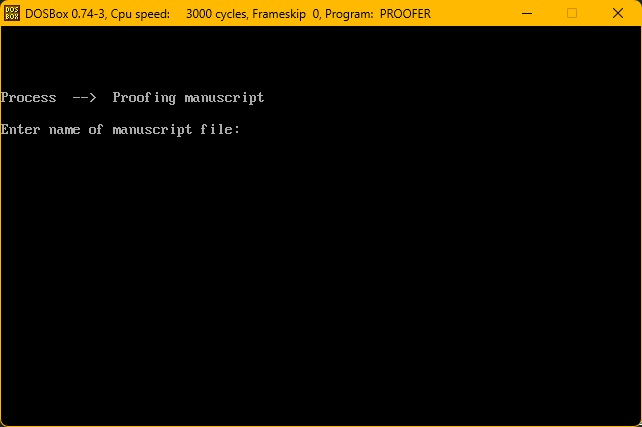
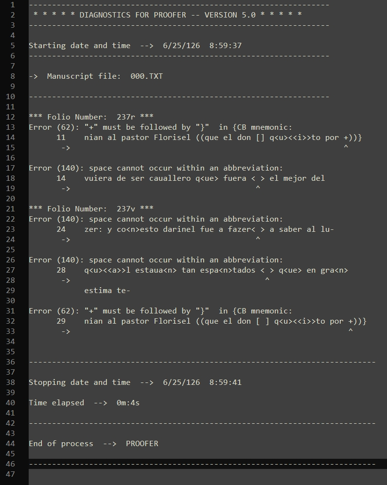

Un poco de historia: proofer DOS
A comienzos de los años setenta del pasado siglo, a propuesta de John J. Nitti, antiguo alumno de Lloyd A. Kasten y, por entonces, su colega en la Universidad de Wisconsin-Madison, el Seminario de Estudios Medievales empezó a explorar la posibilidad de diseñar una base de datos de fichas de citas lexicográficas que fuera exhaustiva y estadísticamente representativa del español antiguo. Esta base de datos tenía como fin principal la elaboración del Dictionary of the Old Spanish Language (DOSL) y, al mismo tiempo, satisfacer las necesidades de los lingüistas en la formulación de teorías sobre problemas tanto diacrónicos como sincrónicos de la lengua española.
La creación y el aprovechamiento de esta base de datos léxica solo podían llevarse a cabo mediante el uso de la tecnología informática. Sin embargo, el punto de partida planteaba un problema fundamental: las ediciones existentes de textos medievales no podían utilizarse directamente, debido a que las intervenciones de sus editores modernos alteraban o normalizaban el texto original, introduciendo sesgos que comprometerían la fiabilidad de los datos lingüísticos. Era necesario, por tanto, preparar nuevas transcripciones paleográficas electrónicas de textos en español antiguo. El Seminario decidió así centrar sus primeros esfuerzos en sistematizar el proceso de transcripción de las fuentes manuscritas, y se ideó un sistema de representación semipaleográfica diseñado para reproducir el texto original y su disposición gráfica con la mayor fidelidad posible. Este sistema, al reducir al mínimo la intervención editorial, resolvió problemas como la normalización ortográfica, la puntuación moderna o la modificación de abreviaturas, comunes en las ediciones críticas tradicionales de textos medievales, tanto manuscritos como impresos. El nuevo método de transcripción fue descrito por primera vez en 1977 por Kenneth Buelow y David Mackenzie en A Manual of Manuscript Transcription for the Dictionary of the Old Spanish Language.
Una vez establecidas las normas de transcripción, el siguiente paso fue desarrollar las herramientas informáticas necesarias para procesar y explotar los archivos electrónicos resultantes. Con este fin, Jean Lentz escribió en Pascal diversos programas, entre ellos proofer, para la verificación semiautomática de las transcripciones; concord, para la generación de concordancias; y citeslip, para la producción de fichas lexicográficas.
El programa proofer es una herramienta de validación para transcripciones de manuscritos preparadas de acuerdo con las convenciones del Hispanic Seminary of Medieval Studies (HSMS). Diseñado originalmente para funcionar en el entorno MS-DOS, y con una última actualización de enero de 1997, proofer puede utilizarse hoy en Windows con la ayuda de un emulador.

Figura 1. proofer funcionando en DOSBox
El programa proofer analiza los ficheros de texto plano y señala posibles incidencias estructurales, editoriales y técnicas que pueden requerir revisión, generando como resultado un fichero de diagnóstico en el que se indican los errores detectados. A partir de este diagnóstico el usuario hace las correcciones oportunas en la transcripción paleográfica.

Figura 2. Fichero de diagnóstico de proofer